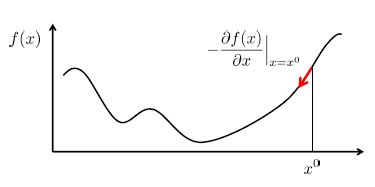

목차
로지스틱 회귀모델은 데이터 분석을 전공하지 않더라도 이 분야에 관심있는 분이라면 한 번쯤 꼭 들어봤을 주제입니다.
이번 장에서는 로지스틱 회귀모델의 개념과 원리, 종류들에 관해서 배우고 실제 코드로 적용해 볼 것입니다.
- 로지스틱 회귀(Logistic Regression)란?
- 로지스틱 모형 속으로
- 로지스틱 모형의 종류
- 로지스틱 회귀모형 실습
3.1 Binary Logistic Regression
3.2 Nominal Logistic Regreeion
3.3 Ordinal Logistic Regression
1. 인공 신경망(Neural Network)이란?

인공지능, 머신러닝, 강화학습 등 세간의 뜨거운 감자의 중심에는 뉴럴 네트워크, 바로 인공신경망이 항상 함께합니다. 이번 챕터에서는 이 인공신경망 이란 것이 어떤 모델이며, 어떻게 데이터 마이닝 분야에서 활용할 수 있을지 알아보겠습니다.
인공신경망은 이름에서 알 수 있듯, 자연의 신경망을 본 떠 만든 인공적인 기계학습 모델입니다. 인간의 뉴런 구조를 본 떠 만들었다고 하는데 그림으로 보면 다음과 같습니다. 데이터 마이닝 모델 중 하나로서 인공 신경망을 배우기 이전에 가볍게 원래 개념은 어떤 지에 대한 상식 수준으로 읽어 주시면 됩니다.
그림은 좌측에 자연 신경망 도식과 우측에 인공 신경망의 구현도를 나타내고 있습니다. ‘자연 신경망’에 대한 인류의 연구를 아주 짧게 설명하면 다음과 같습니다. 왼쪽 그림의 한 덩어리, 뉴런, 신경세포는 인간의 신경계를 구성하는 기본 세포 단위입니다. 이온 통로를 발현하여 전기적인 신호를 서로 주고받는데, 시냅스라는 구조를 통해 연결해 다양한 정보를 받아들이고 저장하는 역할을 합니다. 우리의 뇌는 이런 수많은 신경 세포가 시냅스로 연결되어, 전기신호를 처리하는 기계와 같은 구조를 띄고 있습니다.
‘분석(Analysis)’은 말 그대로 ‘나누어 생각함’을 의미합니다. 풀어서 말하자면, 복잡한 내용, 많은 내용을 지닌 사물을 정확하게 이해하기 위해 그 내용을 단순한 요소로 나누어 생각함을 의미합니다. 즉 앞서 언급한 ‘판별’의 개념과 합쳐서 생각하면, 사물(새로운 관측값)을 더 잘 이해하기 위해 단순한 요소로 ‘나누어 생각’하며, 그 나누는 기준은 ‘판별법’을 토대로 구성되는 것입니다. 그렇기에 새로 관측된 개체를 사전에 알고 있던 여러 개의 그룹 중 하나의 그룹으로 ‘분류’하는 성격을 가지고, ‘분류법(classification)’으로 쓰이는 것입니다.
먼저 수상돌기(dendrite)는 수많은 가지로 뻗친, 신경세포가 신호를 수용하는 부분입니다. 수상돌기는 다른 자극을 수용해서 세포체의 신경 핵(cell body – core)로 전달합니다. 세포체의 신경 핵을 지나며 우리 몸의 역할에 맞는 신경 처리를 거칩니다. 축삭(axon)은 세포체에서 처리된 신호를 세포체로부터 다른 신경세포나 세포에 전달하는 부분입니다. 즉 축삭의 말단(terminal axon)이 다시 다른 신경 세포의 수상돌기(dendrite)로 이어져서, 세포들은 이어집니다. 간단히 오른쪽과 같이, 세포체는 함수로, 수상돌기에서 입력된 입력은 X들, 축삭을 통해 외부로 전달되는 신호는 결과 Y로 표현합니다. 이런 연결된 구조를 시냅스라고 하는데 다음과 같습니다.
시냅스는 여러 신경세포의 연결을 의미합니다. 오른쪽 인공 신경망의 시냅스 개요도처럼 많은 신경세포 노드들이 선으로 연결되어 있습니다. 이 때 자연의 축삭에서도 축삭 둔덕(axon hillock)이라고 하는 통로를 거쳐서 신호가 처리되어 전달되는데, 예를 들어 전달이 1이라고 할 때, 1 그대로 혹은 0.5의 정도로 보낼 지, 아니면 보내지 않을 지 결정하는 것을 의미합니다. 그런 신호의 결정을 인공신경망에서는 연결선(edge, connection)의 가중치(weight)라고 합니다. 컴퓨터 공학에서는 이런 구조를 (유향) 그래프라고 하는데 노드(동그란 신경세포)가 수많은 선(축삭)과 가중치로 연결된 구조를 의미합니다. 이 구조가 겹겹이 쌓여서 층(Layer)들을 이루고, 우리는 이걸 뇌, 오늘날 인공지능이라고 부릅니다.
겉으로 보면 울렁이는 생물학 시간 같고, 복잡한 컴퓨터 공학 전공수업의 한 부분 같지만 뇌를 너무 간단하게 모델링 한 것이 아닌가 싶을 정도로 작동 원리도 생각보다 깔끔합니다. 노드로 표현된 한 신경세포는 릴레이(이어달리기) 하듯, 전기 신호를 전달받고 그걸 처리해서 넘겨줍니다. 넘겨줄 경우에 연결 상태에 따라서 신호가 달라질 수 있습니다. 그냥 이 행위를 연결된 다른 동료 세포들과 그 수명이 다 할 때까지 반복하는 겁니다. 정말 간단하지 않습니까? 전달받고 수정하고 전달하고.
2. 회귀로의 회귀(Regression)
그럼 도대체 이렇게 간단한 인공 신경망이 왜 우리 인류에게 4차산업혁명, 인공지능이라는 위대한 변화를 안겨주는지 그리고 데이터 마이닝에 어떻게 연결되었는지 알아볼 차례입니다. 그 연결의 시작은 회귀식에 있습니다.
먼저 아주 간단한 회귀 식을 생각하면 다들 ‘y = ax + b’ 라는 식을 떠올리실 겁니다. 이 식이 앞서 설명한 인공신경망의 처리 과정과 일치합니다. 그림을 봐 주시면,
y = ax + b 라는 왼쪽의 회귀 식은, 우측 신경망의 Y = XW + b의 식과 일치합니다. 결과값 y를 바탕으로 새로운 결정을 할 경우에, 활성함수(activation function)을 거쳐서 y를 출력하는 점이 있기 때문에 다르게 느끼실 수 있지만, 회귀 식의 경우 역시 결과값 y를 바탕으로 어떤 결론을 이끌어 내는 과정이기에 동일하다고 할 수 있습니다. 예를 들어 코트를 구매할지 말지 선택해야 할 때, 기온, 가격 등을 독립변수로, 코트 구매 확률/코트 판매 수 등이 종속변수로 출력된다고 했을 경우, 회귀식과 신경망 연산은 같은 논리의 계산 결과를 출력할 것이며, activation function을 통해서 내려지는 결정(y)은 회귀분석의 결과값 y를 가지고 기준에 따라 결론을 내리는 것과 완전히 같습니다. 이 경우에서는, 코트 구매 확률이 >0.5 이상일 경우 구매한다(y’)라는 결론을 내릴 수 있는 것입니다.
이처럼, 회귀를 비롯, 패턴 인식을 할 수 있는 다른 통계 모델과 궤를 같이 하기 때문에, 데이터마이닝 분야에서도 ‘분류’의 모델로 사용할 수 있습니다. 패턴을 학습하여 다름을 아는 것, 분류하는 것은 인간의 지능과 밀접한 관련이 있기 때문에 ‘인공지능’의 영역에서도 활발히 쓰이는 이유입니다. 컴퓨터 과학 분야에서는 인공 신경망(artificial neuron)이 neural network 그리고 Perceptron이라고도 불립니다. 그래서 많은 컴퓨터 언어의 library들은 심층 신경망을 Multi-layered Perceptron, MLP라고 부르며 함수를 구현해 놓았습니다.
3. 다층 신경망(Multi-Layered Perceptron)
이제 신경망은 알겠는데, 심층, Multi-Layer는 또 어떤 의미인지 궁금해하실 것입니다. 앞서 다른 분류 모델로 소개해드렸던 Logistic Regression 모델은, 선형 분류의 대표적인 모델로서, 주어진 차원에서 직선을 그려 분류해 낼 수 있었습니다. 하지만 이 모델은 비 선형 분류 문제에서 선형 모델로는 분류할 수 없는 한계를 결국 맞닥뜨렸고, 과거 인공지능 역시 단층 퍼셉트론 구조로는 XOR과 같은 문제를 해결할 수 없었던 난관이 있었습니다.
그림으로 표현하면 위와 같습니다. 로지스틱 회귀 모델의 분류 함수였다면, 단 하나의 선형 boundary만을 표현할 수 있어서, XOR과 같은 분류는 할 수 없었습니다. 이를 해결하기 위해서 퍼셉트론 역시 더 많은 층을 쌓아서 선형 층 수를 늘려서 ‘하나의 선을 점차 쌓아가는’ 방향으로 비선형 분류를 돌파했습니다. XOR문제를 해결하기 위한 MLP 모델의 예시는 아래와 같습니다.
1개의 hidden layer와 (중앙), 1개의 input layer 총 2층의 깊이로 직선 두 개를 그어 문제를 해결했습니다. 더 많은 직선이 필요한 문제의 경우에도, 중앙에 은닉 층(hidden layer)를 더 쌓으면서 깊이를 더 깊게 한다면, ‘어느정도는’ 정답에 근접하게 수렴할 수 있습니다.
반면, 단층 모형의 경우 절대 정답에 수렴할 수 없는데, 이를 코드로 확인해보면 아래와 같습니다.
코드 파일 링크:
4. 신경망 계산의 알고리즘과 원리
결과적으로, 인공 신경망은 비선형의 문제를 해결하는 한 방식으로서, 분류 모델로 사용될 수 있어 현재 널리 사용되고 있습니다. 이제 인공 신경망의 학습 방식에 대해서 배워보겠습니다. 인공 신경망 역시 주어진 데이터를 통해서 패턴을 학습하고, 그 특징을 기억하는 지도 학습의 한 종류입니다. ‘적절한’ 층의 개수, 노드의 수, 연결의 상태, 그리고 초기 weight 값을 설정해서 신경망 모델을 구축하고, 입력 값을 계속 학습하는데, 이를 전방 계산 (forward computation) 이라고 합니다. 전방 계산 후, 발생하는 오류를 통해서 weight 값을 갱신하는 데, 이때 사용되는 알고리즘이 바로 오류 역전파(Back Propagation) 알고리즘입니다. 틀린 결과를 통해서, 다시 역순으로 레이어들을 방문해, weight 값 들을 올바른 방향으로 갱신합니다.
먼저, 오류함수의 최적해 도출 과정을 보겠습니다. 이 비선형 분류 문제 해결을 위해서 앞서 언급했던 결과 값 y를 출력하는 activation function은 미분 가능한 함수로 설정하는데 주로 sigmoid, hyper-tangent, relu 등이 쓰입니다. ‘미분 가능’해야 하는 이유는 학습 이후 틀린 weight를 갱신하기 위해서 그렇습니다. 학습 이후 오류를 최소한으로 줄이는 일을 위해, Cost 또는 Error Function을 만들고 미분을 통해서 오류가 최소가 되는 지점을 찾기 때문입니다. 이때, 미분을 통해서 수렴하는 최적의 값을 찾는 방법을 gradient descent (경사 하강법)이라고 불리는데, 기울기가 0이 되는, 극소 또는 극대의 값을 찾아서 ‘최선’의 해를 찾는 알고리즘입니다.

그림에서 표현된 함수 f(x)가 최적화하고자 하는 오차함수이며, 각 지점에서의 미분을 통해서 기울기를 0으로 만드는, 수렴하는 방향으로 학습합니다. 우측 그림의 학습률(learning rate)만큼 지속적으로 경사를 하강해가면서 최적해를 찾습니다. 이 때, 몇 독자 분들은 눈치채셨겠지만, 어떤 초기 지점에서 시작하느냐에 따라서 그 지점이 최소(global minima)일 수도 혹은 극소(local minima)에 그칠 수도 있습니다. 이런 문제 때문에 초기 값을 신중하게, 여러 값을 넣어서 학습합니다.
다시 정리해보면,
1. 인공 신경망 모델을 설계해 세우고
2. 주어진 데이터 셋을 통해서 전방 학습하고 Feed Forward and Prediction
3. 우리가 원하는 결과(expected output)와 학습으로 얻은 결과(training output)을 대조하여, 그 차이점을 찾고 오류 함수를 세우며 Cost Function.
4. 미분을 통해서 그 Cost Function을 최적화하는, 오차를 줄이는 방향으로 역으로 추정하며 Back Propagation
5. 결과적으로 Weight를 Update합니다.
저는 개인적으로 앞으로 갔다 뒤로 갔다 하는 모습을 보면서 굉장히 합리적이라고 느꼈습니다. 저희가 공부를 할 때 역시, 참고서가 있다면(학습데이터), 먼저 문제를 풀어보고 답을 비교합니다(지도학습). 그 답안 결과를 통해서 다시 틀린 문제들 만을 모아 다시 학습하는데, 그 과정에서 아마 우리의 뇌는 비슷한 방식으로 weight 값을 갱신하고 있을 것입니다. (back propagation이 꼭 아닐 수 있지만 말입니다.)
하지만 계속 학습을 한다고 해서 개선되는 것이 아닙니다. 우리가 주어진 학습용 데이터에 weight 값이 달려있기 때문입니다. 그래서 학습을 지속할수록, 학습데이터에 익숙해지는 것이지, 결코 데이터가 담고 있는 세상의 현실과는 같을 수 없습니다. 그림으로 설명하자면,
검증집합과 훈련 집합은 각각 Validation Set, Training Set으로 부르는데, 모두 ‘학습용 데이터’에서 적절한 (주로 2:8, 3:7 정도의) 비율로 하나는 학습을 위해, 하나는 그 학습을 검증하기 위해서 나눈 것입니다. 세대수는 학습의 횟수로 생각해도 좋습니다. 학습이 지속될수록, 훈련하는 training set에는 최적화가 되지만, 실제 검증을 위한 validation set과는 괴리가 더 생길 수 있습니다. 비유하자면, 수능을 준비하는 학생들이 사설 모의고사와 다른 문제집을 모두 푼다고 해서, 정확히 평가원의 수능을 맞출 수는 없다는 것입니다. 학습은 결국 training data set의 최적화를 할 수 밖에 없으며, 이를 Overfitting 이라고 부릅니다.
5. 인공 신경망 실습
코드 파일 링크:
블로그의 내용이 도움이 되었나요? 저에게 주신 의견을 바탕으로 더 나은 컨텐츠를 만들어갈게요:)